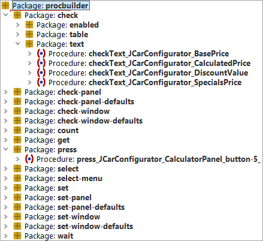
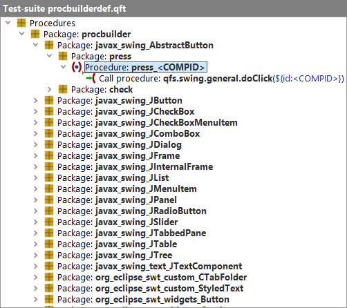

| Version 6.0.3 |
At the beginning of a typical QF-Test project the tester records the first tests and starts them. After a couple of such recordings and first success stories he notices that only recording or performing copy/paste bares some hidden pitfalls in maintaining the tests. Just think about a possible workflow change in a main panel, then the tester might have to adapt all test-cases. That's why we recommend to make use of the modularization concept using procedures and variables as early as possible in a project. For more information about the modularization concept, please see section 8.5.
In projects containing a lot of dialogs and graphical components it might be sufficient to split those procedures into component-specific ones, e.g "press button ok" and separate workflow procedures, e.g. "create a vehicle" combining the component-specific steps together. This approach enables the tester to create new test-cases very fast. However, he has to put a lot of efforts into creating those basic procedures first.
QF-Test comes with a Procedure Builder, which will create those basic procedures for you. Using the Procedure Builder will drastically decrease the efforts of recording and creating procedures for graphical components. So the tester can solely concentrate on his main focus, i.e. designing the workflow of the test itself and the according test-data.
For creating the basic procedure automatically, you have to perform following steps:
Now you should be able to find a newly created package in the 'Procedures' node of the test-suite
where you stopped the recording, containing the created procedures for the components.
By default this is called procbuilder. If the package procbuilder already exists,
a package procbuilder1 will be created and so on. When you open the package you will see a
set of packages for functions like check, get, select, wait and so on.
These contain the procedures created for the components you selected when running the procedure builder,
apart from the check package, where another level with packages for the various check modes is inserted.
This is the default structure, which you can adapt to your needs by modifying the definition file for the procedure builder
as described in the following section.
|
|  | ||
|
| Figure 24.1: Recorded procedures | ||
The act of building procedures is controlled by a template suite,
which is located at
qftest-6.0.3/include/procbuilderdef.qft. This file
should be copied to any project-specific location, if you want to adapt it to
your project. You can define its location in the options at
Configuration file for recorded procedures
.
The template suite contains procedures for the most common GUI elements and actions. If you require other test-steps, you can add the according procedure to this test-suite.
The file itself is a test-suite with a dedicated structure. You can find a detailed explanation of this structure in the subsection subsection 24.3.1. The definition file allows the tester to define procedures for components of dedicated classes or to define procedures for working with all components of one certain window.
You can find some demo configurations at qftest-6.0.3/demo/procbuilder.
The automated creation of basic procedures delivers different procedures depending on the components. A text-field requires a setter procedure for setting its text, a button requires a press procedure for pressing it or a window could require a setter which calls the setter procedures of all text-fields or combo-boxes on that window to call just one procedure for using the window etc..
|
|  | ||
|
| Figure 24.2: The Procedure Builder definition file | ||
The topmost package in the 'Procedures' node is the name of the target package for the newly
created packages. By default this is called
procbuilder. This package will be inserted below the 'Procedures',
when you have finished recording procedures. If the package
procbuilder already exists, a package
procbuilder1 will be created and so on.
The next level is the class level. Here you can define a package per class. The package name represents the full class name, but with '_' as separators instead of '.'. That's because '.' is not allowed in package names. The Procedure Builder creates the procedures also for descendants of specified classes. In case the names of your classes contain a '_', you have to mark this via '\_'.
The following levels can be chosen freely because those levels are intended to structure the procedures.
At the last level you have to define the steps of the procedure itself.
Of course there are a lot of variable data in that
definition, e.g. like <COMPID>.
Using those you can specify variables for the procedure names, like the QF-Test ID of the current component or the component-name. You can also record the current value of the text-field or the current selected status of a checkbox. It's even possible to keep the package structure variable. For an overview of all possible variables, please see chapter 52.
| Last update: 9/6/2022 Copyright © 1999-2022 Quality First Software GmbH |